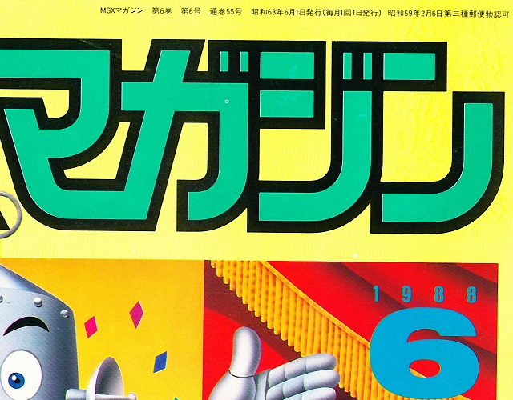
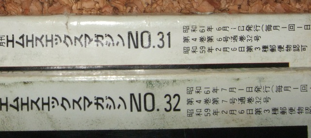

MSXマガジンの怪
定期的に発行されている雑誌では、一般的に週刊誌なら○○年××月△△日号、月刊誌なら○○年××月号等というように記載して、いつ発行されたものか分かるようになっています。それだけではその雑誌がどれだけ発行してきたか分からないためか、巻数、号数という数え方があります。正式な定義は不明ですが、巻数は発行して何年目か、号数はその年の何冊目か、を表しているようでです。
例えば、MSXマガジン「1988年6月6月号」では右上に「第6巻 第6号 通巻55号」と書かれています。

MSXマガジンは1983年に創刊0号を発行していますので、1983年が第1巻、1988年は第6巻にあたります。第6号というのはその年の6番目の発行を示しています。ここで、さらに「通巻 55号」とあります。これは、第1巻から第6巻までの号数を全て足したものになります。1983年は創刊0号（第1巻 第1号）と創刊号（第1巻 第2号）のみで、1984年1月号が第2巻 第1号 通巻3号となります。同様に、1985年1月号が第3巻 第1号 通巻15号、1986年1月号が第4巻 第1号 通巻27号となり、1年毎に通巻が12号増えていきます。そのように計算していくと1988年の1月号は通巻51号になり、同年6月号は通巻56号になる・・・はずなのですが、何故か55号なのです。
1988年までに発行しなかった月があるという話は聞いたことがありません。順を追って調べていくと・・・何故か通巻が重複している号があるようです。
1986年6月号では、計算通り第4巻 第6号 通巻32号になります。
ところが次の1986年7月号は第4巻 第7号・・・までは問題無いのですが、通巻がまたもや32号になっています。

8月号以降はそのまま通巻33号からカウントされ、1988年の1月号は通巻50号となり、6月号が55号となっているようです。
つまり、月刊誌としてのMSXマガジンは、一般的には創刊0号からの通巻で102号で廃刊になったと言われていますが、実際には0号から103号まで発刊していたことになります。1992年3月号、廃刊直前の号が「創刊100号」として特集が組まれています。「創刊0号」から始まっていますので、1992年3月号は確かに「創刊100号」にあたります。ただ、本来「通巻101号」ですが、32号の重複により、通巻でも「100号」になっています。これは何らかの意図があったのか、単純なミスなのか・・・謎です。
| 通称 |
創刊 |
Mマガ表記通巻 |
本来の通巻 |
| 1983年11月号(仮) |
創刊 0号 |
第 1巻 第 1号 通巻 1号 |
通巻 1号 |
| 1983年12月号(仮) |
創刊 1号 |
第 1巻 第 2号 通巻 2号 |
通巻 2号 |
| 1984年 1月号 |
創刊 2号 |
第 2巻 第 1号 通巻 3号 |
通巻 3号 |
| 1984年 2月号 |
創刊 3号 |
第 2巻 第 2号 通巻 4号 |
通巻 4号 |
| ・・・ |
| 1984年12月号 |
創刊 13号 |
第 2巻 第12号 通巻 14号 |
通巻 14号 |
| 1985年 1月号 |
創刊 14号 |
第 3巻 第 1号 通巻 15号 |
通巻 15号 |
| ・・・ |
| 1986年 1月号 |
創刊 26号 |
第 4巻 第 1号 通巻 27号 |
通巻 27号 |
| ・・・ |
| 1986年 6月号 |
創刊 31号 |
第 4巻 第 6号 通巻 32号 |
通巻 32号 |
| 1986年 7月号 |
創刊 32号 |
第 4巻 第 7号 通巻 32号 |
通巻 33号 |
| 1986年 8月号 |
創刊 33号 |
第 4巻 第 8号 通巻 33号 |
通巻 34号 |
| ・・・ |
| 1987年 1月号 |
創刊 38号 |
第 5巻 第 1号 通巻 38号 |
通巻 39号 |
| ・・・ |
| 1992年 1月号 |
創刊 98号 |
第10巻 第 1号 通巻 98号 |
通巻 99号 |
| 1992年 2月号 |
創刊 99号 |
第10巻 第 2号 通巻 99号 |
通巻100号 |
| 1992年 3月号 |
創刊100号 |
第10巻 第 3号 通巻100号 |
通巻101号 |
| 1992年 4月号 |
創刊101号 |
第10巻 第 4号 通巻101号 |
通巻102号 |
| 1992年 5月号 |
創刊102号 |
第10巻 第 5号 通巻102号 |
通巻103号 |
ちなみに、1992年 5月号の後にはムック形式（定期刊行物では無い書籍？）として、「1992年夏号」「永久保存版」「永久保存版２」「永久保存版３」が発行されていますが、形式が異なるためか上記通巻に追加されていないようです。